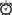

Printing - Agenda - Preview
Printing - Agenda - Preview
Printing - Agenda - Preview
Printing - Agenda - PreviewThe "View and Print" of Reminders / ToDo's have been replaced with a more flexible method. As with previous version requesting a print will first show the page with the browser, or as an tab for Thunderbird. For the final print the Firefox/Thunderbird etc functions are used.The main advantage: the design of the print output can be modified outside of the extension code -- by users with some HTML/CSS experience. By default some templates are supplied and can be used right away.
The Printing will be called on the Main List with the context menu using [Print / View]:
(Note: short key is not implemented at the moment)
Also an Agenda printing has been added, it can be selected from the [Print / View] context menu similar to the other print templates.
The Agenda print has the 'today' and 'upcoming' events and the 'Todo's' combined on one list.
Additionally a startup printing of the Agenda can be configured on the ReminderFox Options / Tooltip tab.

ReminderFox comes with some templates for printing the Reminders/Todo's etc.The picture above shows four sections:
- Section 1: Agenda, for description see below
- Section 2: ReminderFox templates with 'All Events' and 'Selected Events', here a standard layout is used to show/print from Reminders/Todos or Lists
- Section 3: 'Installation Details' (a short overview about the current installation) and 'Help' (calls this page);
- Section 4: User templates, two templates with 'template[example]' and 'table[example]' are supplied.
Newer ReminderFox versions can add/update/replace the templates in section 1 ..3. Also the user can add or modify templates. The next section describes how to do.
The layout is defined in a HTML/CSS structure and additional elements to access the data to be printed. Those definitions are stored in a file with an extension .XSL.
XSL stands for EXtensible Stylesheet Language, and is a style sheet language for XML documents. A good explanation can be found here: http://www.w3schools.com/xsl/default.asp
Maybe you use a special XML Editor like the XML Copy Editor which is available for Windows and
Linux.
It would support you with syntax checking etc.
The predefined templates (section 1 .. 3) are stored in the ReminderFox XPI profile directory. Additionally to these layouts ReminderFox supplies more pre-defined layouts.
Note:
These pre-defined layouts will be copied from the ReminderFox XPI directory to the ‘reminderfox’ users directory with the first use of the Print/View feature.
New layouts/ .XSL files added to the 'reminderfox' directory will be shown immediately in the [Print / View] menu; each menu item has the last modified date/time of the layout.
Print layout should only be modified in the users directory; copy before modification is recommended!
The XML/XSLT print processor is very rigid, most syntax errors will give a 'black' screen, but use the "Error Console" on the browser to get feedback about your errors ... or call back for help ... maybe we can get more templates that way!
Examples of the required directories on different systems:
ReminderFox User directory
Linux /media/DATA/_Mozilla/TB_gW/Profiles/ouh3uj2w.default/reminderfox/
Windows C:\Users\Guenter\AppData\Roaming\Mozilla\Firefox\Profiles\zu3hiox4.default\reminderfox\
ReminderFox XPI Printing Directory
Linux /media/DATA/_Mozilla/TB_gW/Profiles/ouh3uj2w.default/extensions/{ada4b710-8346-4b82-8199-5de2b400a6ae}/defaults/printing/
Windows C:\Users\Guenter\AppData\Roaming\Mozilla\Firefox\Profiles\zu3hiox4.default\extensions\{ada4b710-8346-4b82-8199-5de2b400a6ae}\defaults\printing\
Which data items of the selected events/todos on the main dialog list can be printed are easily shown with the file current.xml. This file is generated with each printing process and is stored in the ReminderFox XPI printing directory.
Using the "Print / View" from the context menu generates the current.xml file (see above). Opening that file in the browser will show all available data items.The structure is:
| <general> | |||
| <remindertype> | "reminder" | "todos" | ||
| <remindertitle> | localized type | ||
| <date><time> | gives the date/time the View/Print was generated | ||
| <version> | used ReminderFox version | ||
| <template> | dirctory of the used .XSL definition to generate the View/Print | ||
| <xlsName> | file name of the used .XSL definition | ||
| <app> | information of underlaying platform, application and country string | ||
| <reminders> | |||
| <event> | multiple entries with content of the selected 'reminders' / 'todos' as indicated by <remindertype> | ||
| <locale> | text strings to be used as descriptors for the printing (eg. Date, Priority, Location, ...)
The strings are localized for currently used 'locale' version of the application |
||
The different 'date' based items of an event or todo are converted to some preformatted elements, eg.: for the "Beginning Date" of an event it is:
| element | content and formatting (as defined with ReminderFox Options) |
| <date> | formatted with setting of ReminderFox/Options/List Display 'Date and Time' |
| <date_time> | formatted with [time] |
| <date_shortDay> | 'weekday' of date formatted with [shortDay] |
| <date_ref> | the JS value .getTime(), the number of millisec back to 01.01.1970 0:00:00 |
The printout can have some icons, same as they are used with the ReminderFox MainList display. With the template "default" those icons are used with the reminders/todos's at different positions (the second column or leading to Notes / URL)
| Icon | HTML string |
|  | <img alt="" src="file:pics/alarmbell.png"/> |
 |
<img alt="" src="file:pics/alarmbellSnooze.png"/> |
| <img alt="" src="file:pics/ribbon-red-small.png"/> | |
 |
<img alt="" src="file:pics/ribbon-blue-small.png"/> |
| <img alt="" src="file:pics/notes.png"/> | |
 |
<img alt="" src="file:pics/mail.png"/> |
 |
<img alt="" src="file:pics/repeat.png"/> |
 |
<img alt="" src="file:pics/@.png"/> |
 |
<img alt="" src="file:pics/location.png"/> |
 |
<img alt="" src="file:pics/category.png"/> |
| <img alt="" src="file:pics/iCal1.png"/> |
To include local language strings with the printout the following strings can be used.
| localeString | Description |
| title | Print/Agenda title |
| reminders | reminders |
| todos | todos |
| summary | Summary of reminder |
| notes | reminder notes |
| priority | reminder priority/importance |
| categories | reminder categories |
| allDayEvent | all day event |
| alarm | reminder alarm |
| url | reminder url |
| location | reminder location |
| Date/time formated with local representation, see above 4. Date items | |
| date | start date |
| endDate | end date |
| date_shortDay | start date short form: |
| endDate_shortDay | end date short form: |
| date_time | start date time |
| endDate_time | end date time |
| date_ref | start date reference |
| endDate_ref | end date reference |
| durationTime | todo duration time |
| completedDate | date the reminder is completed |
| todays | todays reminders |
| upcomings | upcomings reminders |
| todaysAndUpcomings | todays and upcomings reminders |
The US-English installation has:
For a German installation this gives: